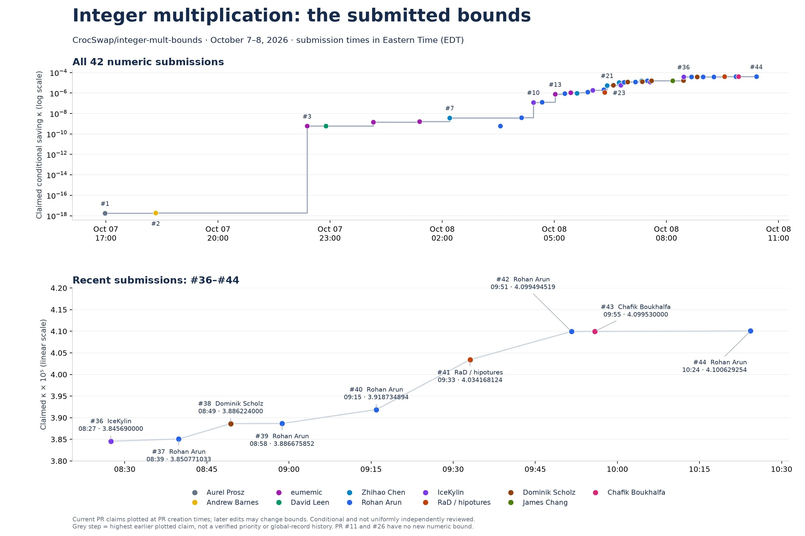

The era of Big O speedrunning?
Many long standing algorithmic boundaries just got broken:
| Problem | Old bound | New bound | Source |
|---|---|---|---|
| 3SUM on \(n\) polynomially bounded integers | \(O(n^2)\) | \(O(n^{1.9992})\) | Anthropic |
| APSP on a directed graph with \(n\) vertices and polynomially bounded integer edge weights | \(O(n^3)\) | \(O(n^{2.9995})\) | Anthropic |
| Subset Sum on \(n\) integers | \(O^*(2^{0.5n})\) | \(O^*(2^{0.49n})\) | OpenAI |
| Multiplication of two \(n\)-bit integers | \(O(n \log n)\) | \(O\big(n \log^{1-2^{-182}} n\big)\) | OpenAI |
| Exact discrete Fourier transform of length \(n\) | \(O(n \log n)\) | \(O\big(n \log^{1-10^{-13}} n\big)\) | OpenAI |
| Exact single-source shortest paths in a directed graph with nonnegative real edge weights, with \(n\) vertices and \(\Theta(n \log^{3/4} n)\) edges | \(O(n \log n)\) | \(O(n \log^{11/12} n)\) | Vals.ai |
They just proved these bounds could be broken, but didn't put effort into lowering the exponent. There's probably low hanging fruit in each of those.

This website will track status on the problems, make it easy for people and agents to get started, and show speedrun-style leaderboards.
Inspired by the very successful NanoGPT speedrun, and hoping to bring similar progress and interest to our classic problems.